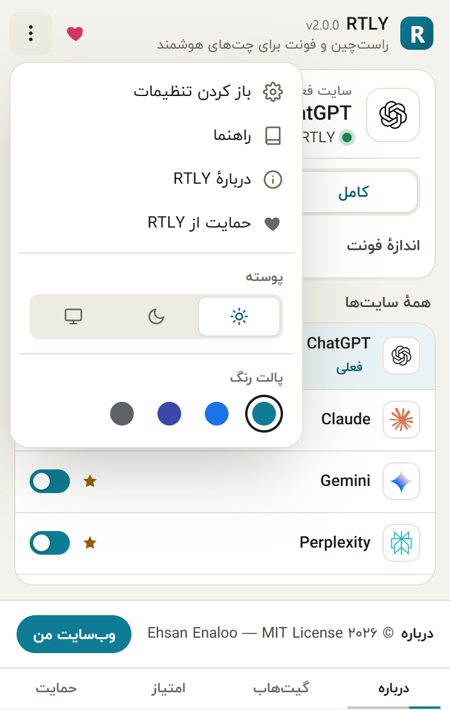
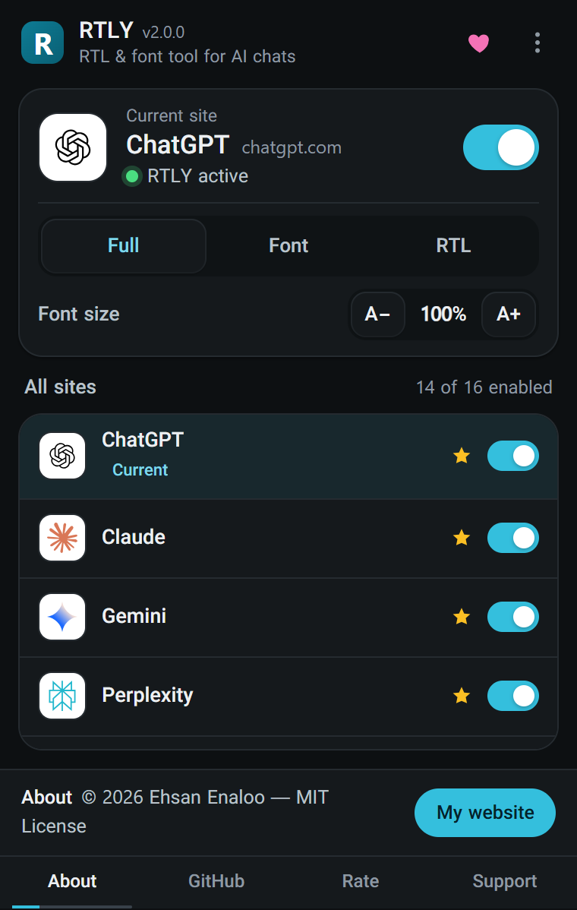

Click the RTLY icon in the toolbar to open it. Everything you change here is saved at once.


The current site card#
When the tab you are on is a supported site, the top of the popup shows a card for it:
| Control | What it does |
|---|---|
| Site name and address | Shows which site RTLY recognized, for example Claude and claude.ai. |
| Status line | "RTLY active" when the site is on, "RTLY disabled" when it is off. |
| Switch | Turns RTLY on or off for this site. RTLY reloads the site's open tabs after you change it. |
| Full / Font / RTL | The mode for this site. A short line under the buttons explains the selected mode. Mode changes apply to open tabs at once. |
| Font size, A− and A+ | Changes the text size by 5% per click, from 85% to 120%. This setting is shared by all sites. |
On any other page, the card says that RTLY does not support the site and asks you to open one of the supported chats.
All sites#
Below the card is the list of all 16 supported sites with a switch for each, and a count such as "16 of 16 enabled". Pinned sites come first and show a star. A site that is in a single-feature mode shows a small "Font only" or "RTL only" tag, and the site you are on is tagged "Current". You choose the pinned sites on the settings page. Until you change it, the pinned sites are ChatGPT, Claude, Gemini and Perplexity.
The menu#
The three-dot button opens a menu:

- Settings opens the settings page in a new tab.
- Help guide opens this user guide on GitHub Pages.
- About RTLY shows the version, the author, the author's website (www.enaloo.com) and a support button.
- Support RTLY opens the Buy me a coffee page.
- Theme: light, dark or system.
- Color palette: teal, blue, indigo or neutral.
The heart button in the header does the same as Support RTLY. These links open only when you click them.
The footer#
The bottom of the popup rotates every few seconds through four short messages: about, source code on GitHub, rate the extension, and support. The GitHub, rating and support messages have a button that opens a page in a new tab.
The support reminder#
About two weeks after installation, and then at most once a month, RTLY asks once if you want to support the project. Two things happen:
- While a supported site is in front, a small red heart appears on the toolbar icon.
- When you open the popup, a card appears with a coffee button, a rating button and "Not now". Showing the card clears the heart and starts the next month.
The reminder never appears inside a web page. It uses no timer, no alarm and no network request. Nothing in the interface turns it off for good, but it can appear only about once a month.
Language and direction#
The popup follows the interface language you picked on the settings page, or your browser's language if it is one of the 15 supported languages. Right-to-left languages flip the whole popup. See Languages and appearance.
